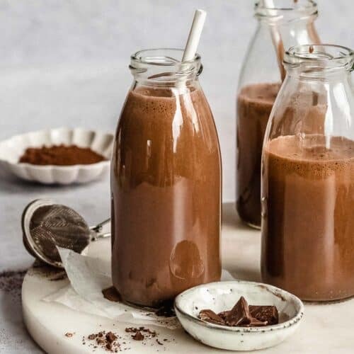

Choccy Milk, not chalky milk, is a refreshing drink
to pair with a PBJ Sammy on a hot summer day. For a delightful twist on the classic drink,
leave it sitting in your car for the afternoon to turn it into hot chocolate.

Ingredients
Follow this comprehensive list to ensure you have all the ingredients
necessary to prepare your Choccy Milk:
- Milk is an absolute necessity. Without it, it would just be chocolate.
Also, whole milk. Don't be a degenerate and get anything else.
- Chocloate Syrup is the last ingredient you will need. Don't
even dare going for a powdered chocolate. Hershey's. Syrup.
Steps to Enjoy Your Choccy Milk
1. Do you seriously need directions on how to make chocolate milk?
Return to Main